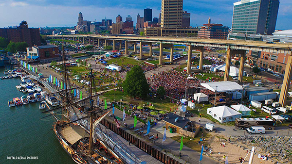
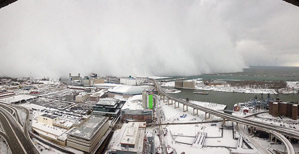
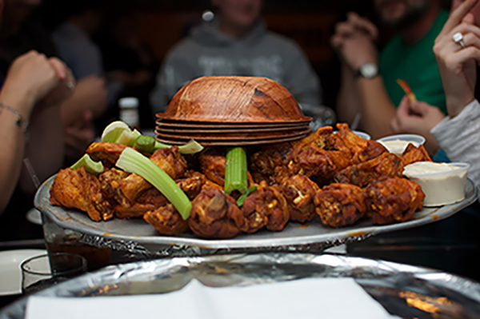
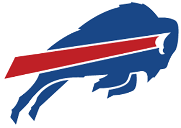
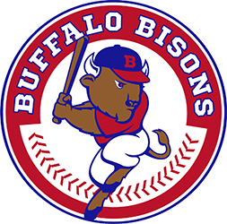
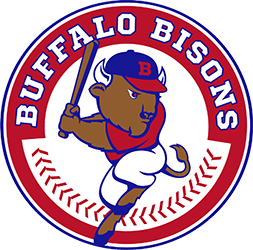

Oh so much to do
The city of buffalo is a great place to live. Between the snowy winters and concert filled summers there is never any excuse not to have a great time. Buffalo is home to many fantastic places such as Canalside, The Naval Park, The Buffalo Zoo and so much more.
 The Food
Most people know that Bufflo is home to the Chicken Wing, but there's a lot of other food that the city is famous for...
- Cheerios
- Loganberry
- Mighty Taco
- Sponge Candy
- Chiavetta's Chicken
... just to name a few. It is all celebrated yearly at one of the city's largest festivals, The Taste of Buffalo.
The Sports
If you know one thing about Buffalo it should be that it is home to some of the most dedicated sports fans there are. The buffalonian sports fans are proud to be part of "One Buffalo", a slogan proving the connection of the sports teams in the city as well as their fans. The term One Buffalo is also very apporopriate since the Peggula family owns three of the four teams located in Buffalo.
 
